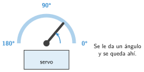

Actuadores
🤔 Pienso5 min
Qué hago aquí: Piensa un momento y contesta con lo que ya sabes. No pasa nada si no lo sabes: es para empezar.
Un robot aspirador avanza, pita cuando se atasca y enciende una luz si le queda poca batería. ¿Qué pieza hace cada cosa?
📖 Leo y aprendo15 min
Qué hago aquí: Lee despacio, mira los dibujos y los ejemplos, y quédate con la idea clave del final.
Los actuadores hacen la acción: dan luz, suenan o se mueven. Son las «manos» del robot.

✏️ Hago25 min
Qué hago aquí: Haz las actividades en orden. Empieza siempre por las básicas.
Une cada actuador con lo que hace.
| LED • | • Pita |
| Zumbador • | • Gira a un ángulo |
| Motor • | • Da luz |
| Servo • | • Gira sin parar |
Vuelve al robot aspirador de Pienso. Escribe el actuador de cada tarea.
¿Qué actuador eliges? a) Las ruedas de un robot. b) Un aviso de batería baja. c) Una barrera de aparcamiento.
En MakeCode, programa la barrera del ejemplo. Pruébala en el simulador.
Haz que el servo vaya a 0°, espere un segundo, vaya a 180° y espere otro segundo, para siempre.
🚀 Amplío (si quieres saber más)
Qué hago aquí: ¿Has terminado? Lee la curiosidad o elige el reto. Es voluntario.
Programa el servo para que apunte a 0° si inclinas la placa a la izquierda, a 90° si está plana y a 180° si la inclinas a la derecha. Usa aceleración (mg) x.
✅ Compruebo5 min
Qué hago aquí: Contesta sin mirar la ficha y marca cómo lo llevas.